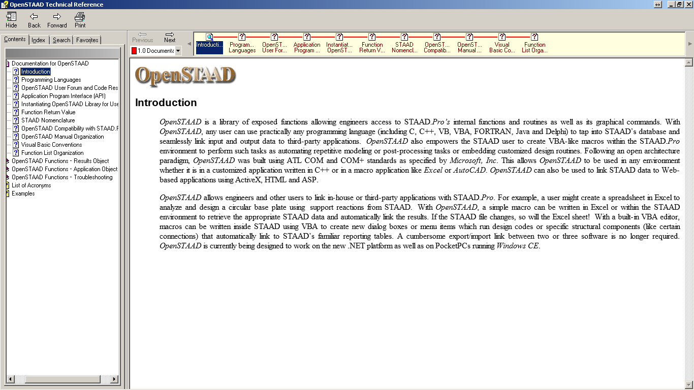

STAAD Pro Macros
Manipulating the software - through the API
A SHORT INTRODUCTION
What is an API ?
Application Programming Interface are the set of contructs that allow control of the core engine - in this case the STAAD Pro Software.
Never saw an option for API in STAAD ?
Trust me .... its there,
Have a look at the ->All Programs->Bentley Engineering->STAAD Pro V8i (or your version) and you will find a file called OpenSTAAD Reference Documentation

What is OpenSTAAD ?
"OpenSTAAD is a library of exposed functions allowing engineers access to STAAD.Pro’s internal functions and routines as well as its graphical commands."
Functions, routines, commands ..???
This is what programming is made of, apparently its more than just mouse clicks.
To learn programming, head over to:
Language, Platform ?
- Built on ATL COM and COM+ standards
- Language: C, C++, VB, VBA, FORTRAN, Java, Delphi, C#
- MS Windows, atleast upto Win - 7
What all can this API do ?
- STAAD File Input and Output (I/O)
- Structure Geometry
- Member Specifications
- Properties
- Loads
- Output Results
- Nodes
- Beams
- Plates
- Solids
- STAAD Pre-Processor
- STAAD Post-Processor
- Creating Dialog Boxes and Menu Items
Refer code samples in the repository - 1
Step 1: Initializing OpenSTAAD Library
'Initialize the STAAD Appplication Object
Set objOpenSTAAD1 = GetObject( , "StaadPro.OpenSTAAD")
Or
'Initialize the STAAD results object
Set objSTAADResults = CreateObject("OpenSTAAD.Output.1")
Work on the former, if you want to work on the model and the latter if you just want to work on the results.
Step 2: Now do what the API lets you do
For example,
'Retrieve the Filename of the currently open staad file with full path
bIncludePath = True
objOpenSTAAD1.GetSTAADFile strFileName, bIncludePath
Points to observe:
- objOpenSTAAD1 is the name of Application object we created previously.
- GetSTAADFile is the name of OpenSTAAD function
- VBA is case-sensitive, so the function name, should appear as it is.
- strFileName & bIncludePath are variable names, that store the filename and function options
Root Functions
- Analyze
- CloseSTAADFile
- GetBaseUnit
- GetInputUnitForForce
- ShowApplication
- UpdateStructure
Subset selected randomly to highlight the API
Geometry Functions
- Geometry.AddBeam
- Geometry.AddMultipleBeams
- Geometry.AddMultipleNodes
- Geometry.AddMultiplePlates
- Geometry.DeleteBeam
- Geometry.DeletePlate
Subset selected randomly to highlight the API
View Functions
- View.CreateNewViewForSelections
- View.HideAllMembers
- View.HideEntity
- View.HideMember
- View.HidePlate
- View.HideSolid
Subset selected randomly to highlight the API
Properties Functions
- Property.AssignBeamProperty
- Property.AssignBetaAngle
- Property.AssignPlateThickness
- Property.CreateBeamPropertyFromTable
- Property.CreateMemberCompressionSpec
- Property.CreateMemberPartialReleaseSpec
Subset selected randomly to highlight the API
Loads Functions
- Load.AddElementPressure
- Load.AddLoadAndFactorToCombination
- Load.AddMemberConcForce
- Load.AddMemberUniformMoment
- Load.AddStrainLoad
- Load.GetActiveLoad
Subset selectedrandomly to highlight the API
Supports Functions
- Support.AssignSupportToNode
- Support.CreateSupportFixed
- Support.GetSupportCount
- Support.GetSupportNodes
- Support.GetSupportType
Subset selected randomly to highlight the API
Command Functions
- Command.CreateSteelDesignCommand
- Command.PerformAnalysis
- Command.PerformPDeltaAnalysisConverge
- Command.PerformPDeltaAnalysisNoConverge
Output Results Functions
- Output.GetAllPlateCenterForces
- Output.GetAllPlateCenterMoments
- Output.GetAllPlateCenterStressesAndMoments
- Output.GetAllSolildNormalStresses
- Output.GetIntermediateMemberForcesAtDistance
- Output.GetMemberEndForces
Subset selected randomly to highlight the API
Results Table Functions
- Table.AddTable
- Table.CreateReport
- Table.DeleteTable
Subset selected randomly to highlight the API
You can even link other applications
Create a handle for an MS Excel spreadsheet, allowing to use Excel data, or send data to Excel.
'Initialize the Excel Object
Set EX1 = CreateObject ( "Excel.Application")